El Portal de procesos es el sistema de Century Mold para pedir y autorizar tiempo extra y transporte. Tú eres el primer nivel de autorización de tu área: ves lo que pide tu gente y decides si se autoriza o se devuelve.
Cómo camina una solicitud
Quien la pide (solicitante de tu área) la captura y la envía.
Tú (Autorización 1) la revisas y la autorizas o la devuelves.
Autorización 2 da la segunda firma.
Recursos Humanos la confirma y pide el transporte al proveedor.
El sistema no manda correos ni mensajes. Después de firmar o devolver, avisa tú a la persona que sigue. Cada vez que este manual diga «avisa», es por eso.
Lo que puedes hacer
Ver y firmar en nivel 1 las solicitudes de tu área, en Por autorizar: una por una o varias a la vez.
Devolver una solicitud con un motivo.
Ver las vencidas y el historial de tu área.
Ver Mi área (quién autoriza y quién solicita) y la lista del personal al que puedes pedirle tiempo extra.
Capturar tiempo extra de tu área (pasa directo a Autorización 2).
Lo que NO puedes hacer
Firmar lo que tú mismo capturaste: va directo a Autorización 2.
Autorizar o devolver una solicitud vencida: solo Autorización 2 puede autorizarla fuera de tiempo.
Ver ni firmar solicitudes de otras áreas.
Deshacer una firma o cancelar una solicitud ya autorizada: se pide a Recursos Humanos.
Confirmar el envío al proveedor ni bajar el Formato de rutas.
Dar roles, crear usuarios ni restablecer contraseñas.
2. Primeros pasos
Entrar al portal
Abre https://centurymold-qro.web.app en tu navegador (Chrome, Edge o el de tu celular).
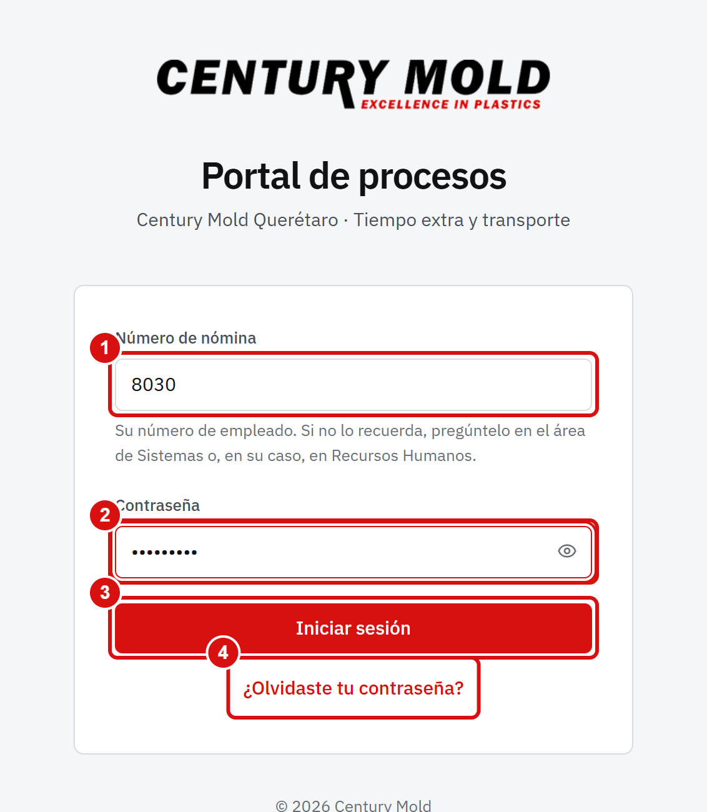
Escribe tu número de nómina.
Escribe tu contraseña. El ojito sirve para ver lo que escribes.
Toca Iniciar sesión.
Si no la recuerdas, toca ¿Olvidaste tu contraseña?. Solo se restablece en persona, con Recursos Humanos, un Autorizador 2 o Sistemas y tu identificación.
La primera vez que entras con una contraseña temporal, el portal te pide crear una contraseña nueva: mínimo 8 caracteres, con letras y números.
Tu pantalla de inicio
Arriba dice tu rol y tu área (por ejemplo, «Autorización 1 · Moldes»).
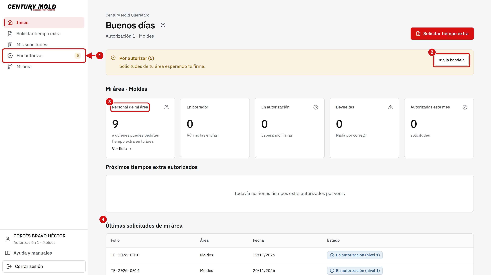
Por autorizar en el menú trae un número: cuántas solicitudes esperan tu firma.
Ir a la bandeja abre esa lista.
Personal de mi área: a cuántos puedes pedirles tiempo extra; Ver lista los muestra.
Últimas solicitudes de mi área, con su estatus. Más arriba: borradores, en autorización, devueltas y autorizadas este mes.
El menú
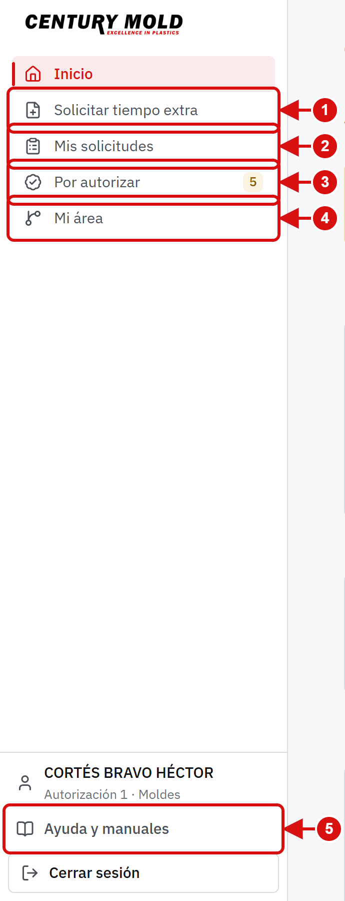
Solicitar tiempo extra: para capturar el de tu área.
Mis solicitudes: lo que tú capturaste.
Por autorizar: tu bandeja.
Mi área: el organigrama de tu área.
Ayuda y manuales (abajo): este manual y su guía rápida en PDF, con «Descargar PDF». Abajo también está Cerrar sesión.
En Mi cuenta (tu nombre, abajo en el menú) cambias tu contraseña, el tamaño de letra, el tema y las ayudas. Por seguridad la sesión se cierra a los 30 minutos sin usar; lo ya firmado no se pierde. En una computadora compartida, cierra tu sesión al terminar.
3. Por autorizar: tu bandeja
Para qué sirve. Aquí están las solicitudes de tu área que esperan tu firma. Cuándo se usa: todos los días.
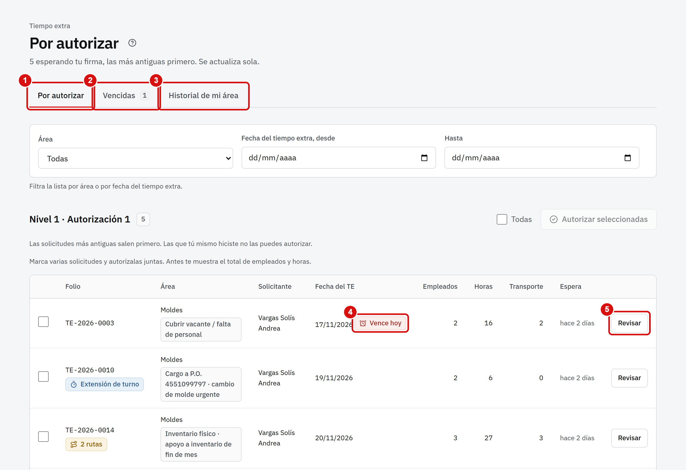
La pestaña Por autorizar es lo que espera tu firma.
Vencidas: las que ya pasaron de fecha.
Historial de mi área: lo que ya salió de tu bandeja.
La insignia Vence hoy marca lo urgente: si no firmas hoy, queda vencida.
Revisar abre la solicitud completa.
Las más antiguas salen primero. Cada renglón trae el folio, el motivo, quién la pidió, la fecha, cuántos empleados y horas, cuántos van con transporte y cuánto lleva esperando. Una insignia Extensión de turno significa que el empleado ya está en la planta y se queda más tiempo. Una insignia 2 rutas (o más) significa empleados en rutas distintas: cada ruta extra cuesta, así que revisa la justificación. Las solicitudes que tú mismo capturaste no aparecen aquí.
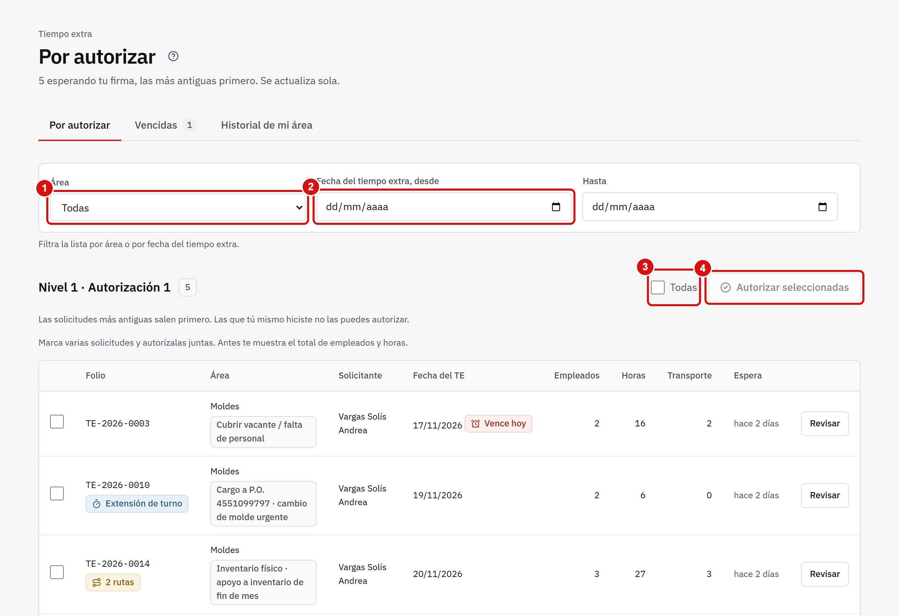
Área: si tienes más de un área.
Fecha del tiempo extra, desde y Hasta.
Todas marca todas las casillas.
Autorizar seleccionadas firma varias juntas (más adelante).
La lista se actualiza sola cuando alguien firma, devuelve o envía.
4. Revisar una solicitud, parte por parte
Toca Revisar. Se abre la solicitud completa; léela de arriba abajo antes de decidir.
Arriba: los datos generales
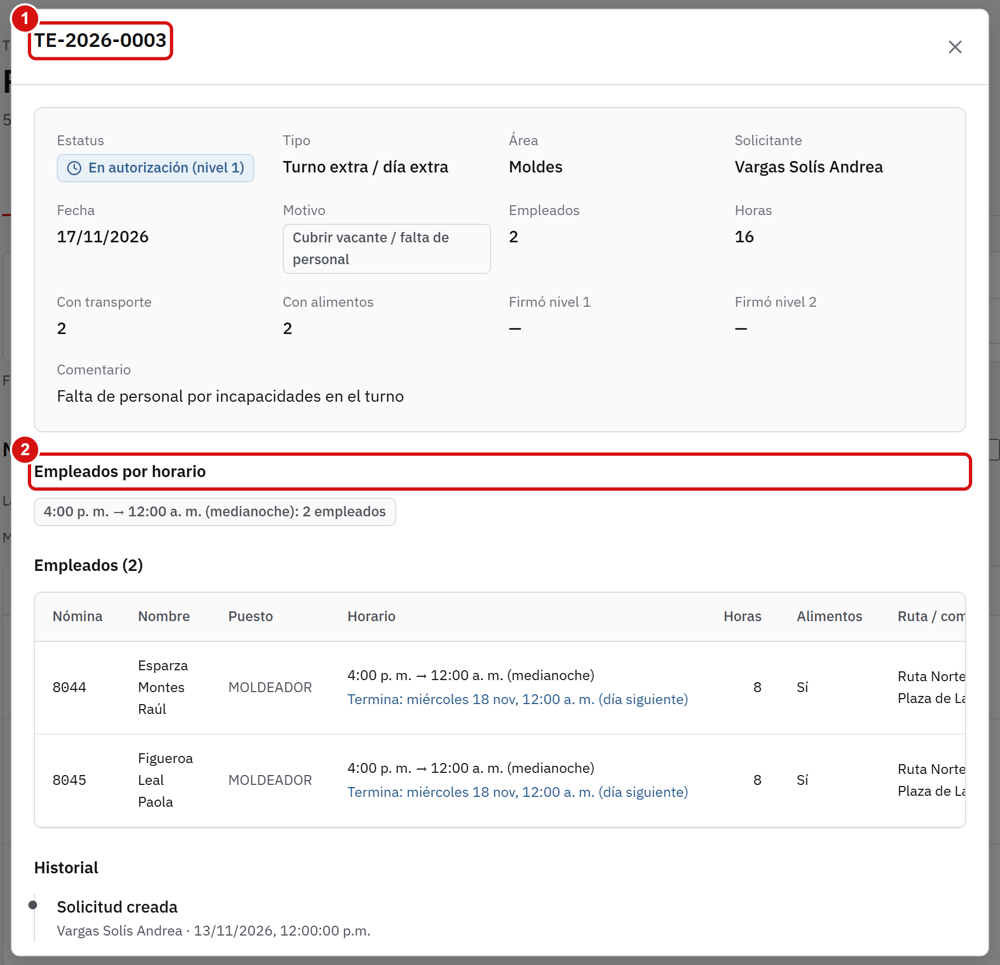
El folio (por ejemplo TE-2026-0003) identifica la solicitud. Dentro verás el estatus, el tipo (turno extra o extensión de turno), el área, quién la pidió, la fecha, los motivos, cuántos empleados y horas, cuántos con transporte y con alimentos, y quién firmó cada nivel.
Empleados por horario resume cuántas personas entran a cada horario.
El comentario explica para qué se necesita. Los motivos dicen por qué; si es «Cargo a P.O.» o TB, trae el número, y el detalle añade una frase corta. Una solicitud puede tener varios motivos.
En medio: los empleados
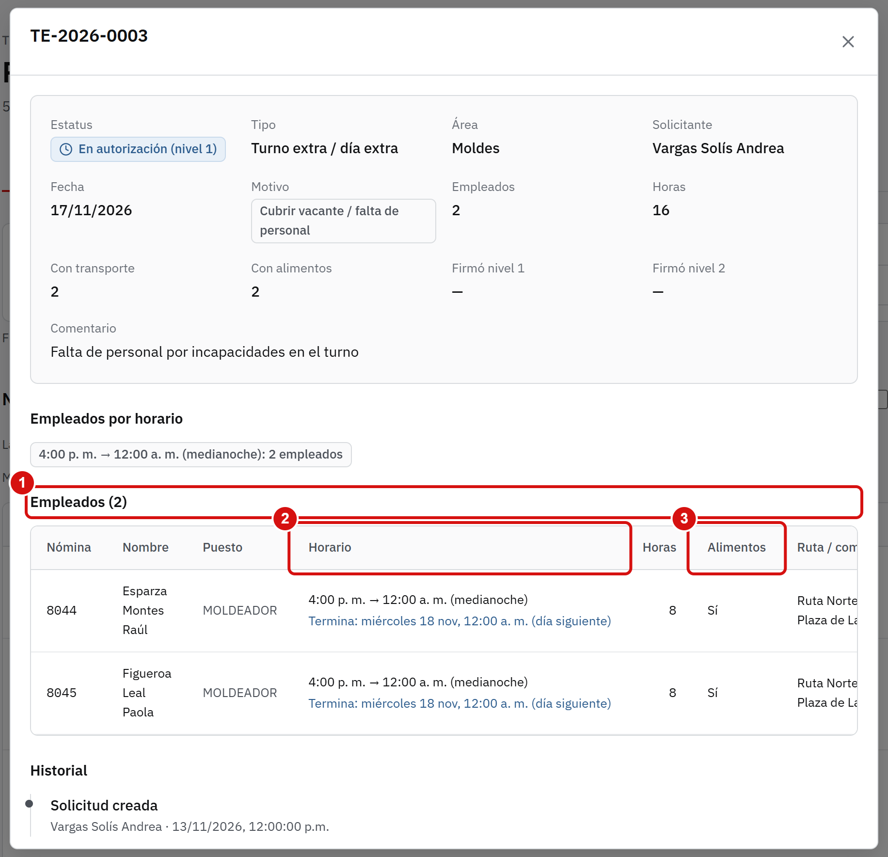
Empleados (n): la lista, con nómina, nombre y puesto.
Horario: entrada y salida. Si termina después de medianoche lo dice, por ejemplo «12:00 a. m. (medianoche)» y «Termina: miércoles 18 nov (día siguiente)».
Alimentos: si lleva comida. A la derecha va Ruta / comunidad / punto: dónde lo recoge el transporte, o «Sin transporte».
Fíjate en los horarios que cruzan la medianoche y en quién va sin transporte: son lo que más se corrige después. El portal también te recuerda: «Cada ruta adicional representa un costo extra. Revisa la justificación antes de autorizar.»
Abajo: historial y decisión
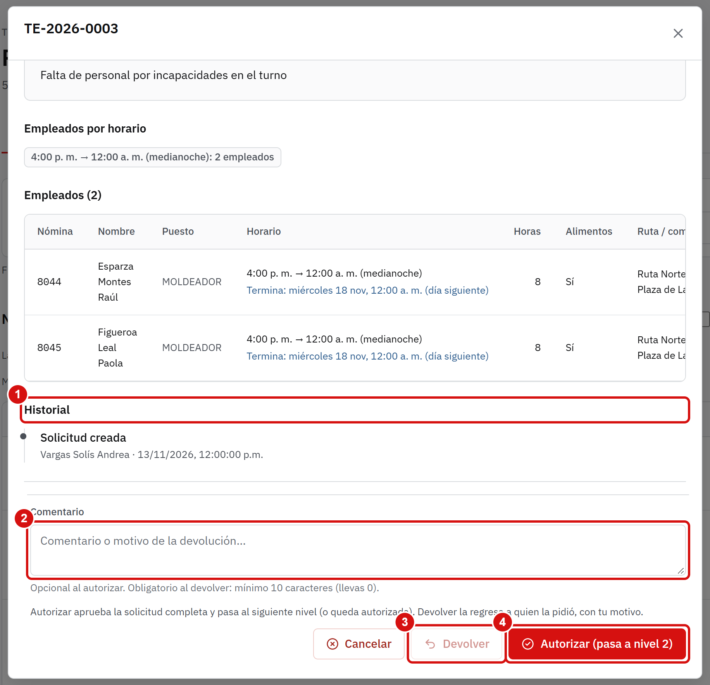
Historial: quién hizo qué y cuándo (creada, devuelta, reenviada…), con los comentarios.
Comentario: opcional al autorizar, obligatorio al devolver (mínimo 10 letras).
Devolver: regresa la solicitud con tu motivo.
Autorizar: da tu firma. Dice a dónde pasa: «Autorizar (pasa a nivel 2)».
5. Autorizar
Para qué sirve. Tu firma de nivel 1 pasa la solicitud a Autorización 2. Cuándo se usa: cuando la solicitud está bien.
Revisa la solicitud (sección anterior).
Si quieres, escribe un comentario.
Toca Autorizar.
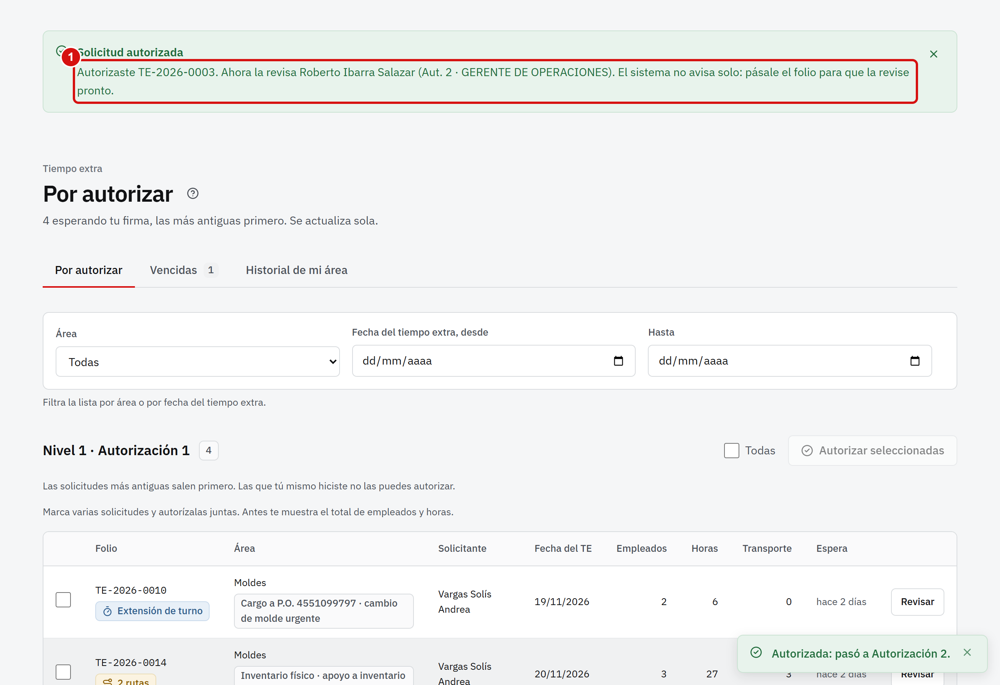
El aviso confirma la firma y dice quién la revisa ahora (por ejemplo, «Ahora la revisa Roberto Ibarra Salazar (Aut. 2)»). También te recuerda que el sistema no avisa solo.
Qué pasa después, y a quién avisar
Su estatus pasa a En autorización (nivel 2). La ves en el Historial de mi área.
Avisa a Autorización 2 («ya firmé el folio…»), sobre todo si el tiempo extra es hoy o mañana: si pasa la fecha sin su firma, queda vencida.
Después, Recursos Humanos la confirma y pide el transporte.
Si otra persona respondió la misma solicitud mientras la tenías abierta, el portal te avisa («Alguien más ya respondió esta solicitud»): no se firma dos veces. Cierra y revisa la lista.
6. Devolver una solicitud
Para qué sirve. Regresar una solicitud a quien la capturó para que la corrija. Cuándo se usa: si hay un error de horarios, empleados, motivo, transporte o rutas.
El motivo es obligatorio. Mientras no escribas al menos 10 letras, el botón Devolver está apagado.
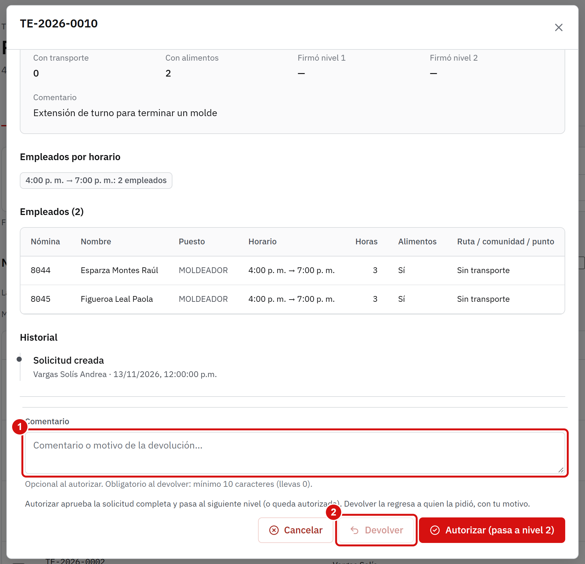
Escribe qué debe corregir en Comentario.
Devolver sigue apagado hasta que el comentario tenga 10 letras.
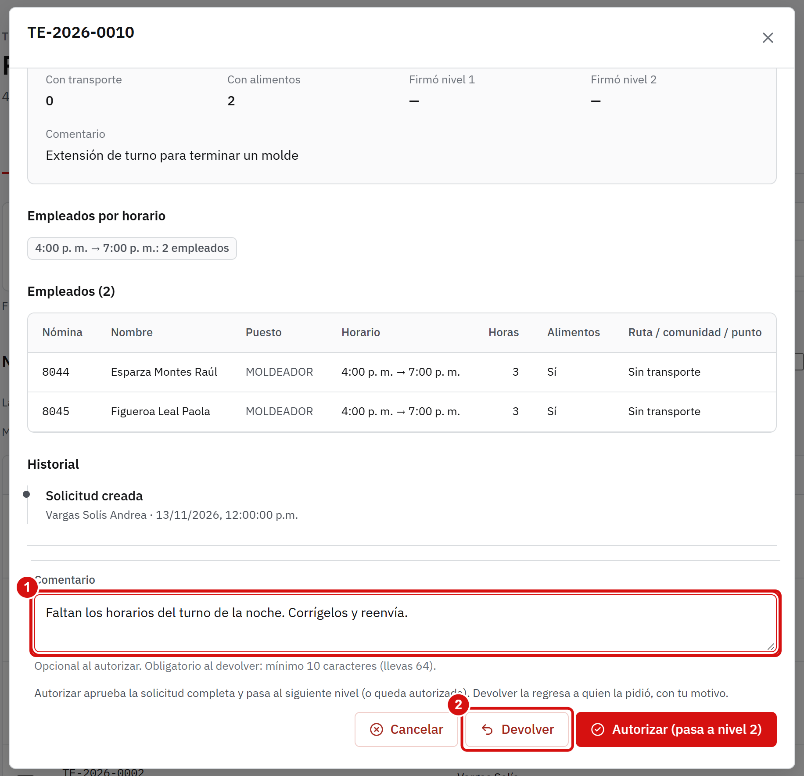
Escribe un motivo claro: qué está mal y cómo corregirlo.
Toca Devolver.
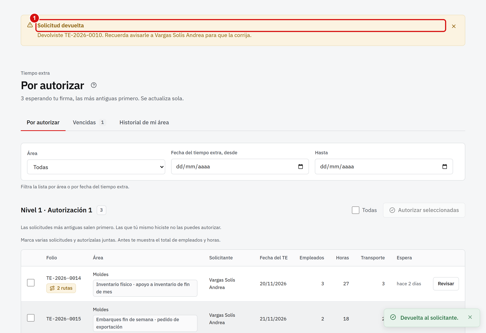
El aviso confirma la devolución y te recuerda avisar a quien la capturó: el portal no lo hace.
Qué pasa después. Su estatus es Devuelta y regresa a quien la pidió, con tu motivo. La persona la corrige y la reenvía: vuelve a tu bandeja con el mismo folio.
7. Autorizar varias a la vez
Para qué sirve. Firmar de un golpe varias solicitudes que ya revisaste. Cuándo se usa: cuando hay muchas y estás seguro de todas.
El portal te muestra el total de empleados y horas que vas a firmar. Revisa y confirma con el botón.
Cada solicitud se firma por separado. Si alguna ya la había respondido otra persona, esa se salta y el resultado te dice cuáles sí se autorizaron.
Antes de firmar muchas juntas, abre al menos las que tengan 2 rutas o muchas horas: un error aquí se repite en todas. Para devolver una solicitud, ábrela y usa Devolver: la autorización múltiple solo autoriza.
8. Vencidas e historial de tu área
Vencidas
Una solicitud vence cuando pasa el día del tiempo extra sin terminar de autorizarse. Ya no se puede autorizar ni devolver «de la forma normal»; aquí es solo consulta.
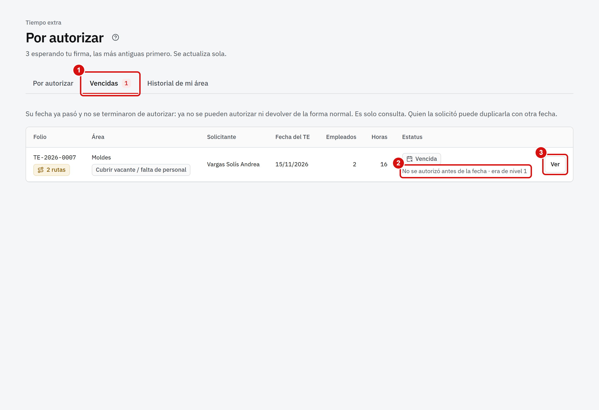
Entra a la pestaña Vencidas (trae un contador).
Cada renglón dice «No se autorizó antes de la fecha» y si era de nivel 1 o 2.
Ver abre la solicitud, sin botones de firma.
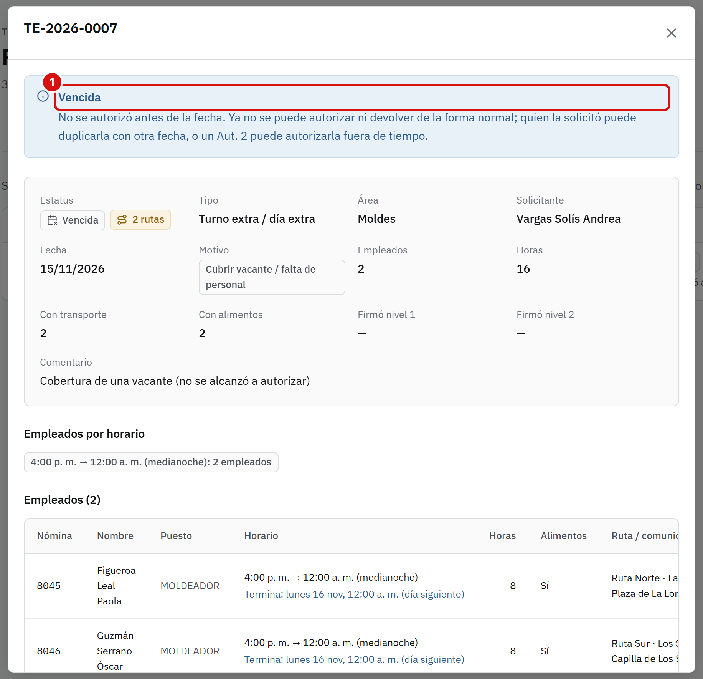
El detalle trae un cuadro azul que lo explica: quien la pidió puede duplicarla con otra fecha, o un Autorizador 2 puede autorizarla fuera de tiempo.
Qué haces tú. Si de verdad se trabajó, avisa a Autorización 2 para que la autorice fuera de tiempo, con su motivo. Si no se trabajó, quien la pidió la duplica con otra fecha.
Historial de mi área
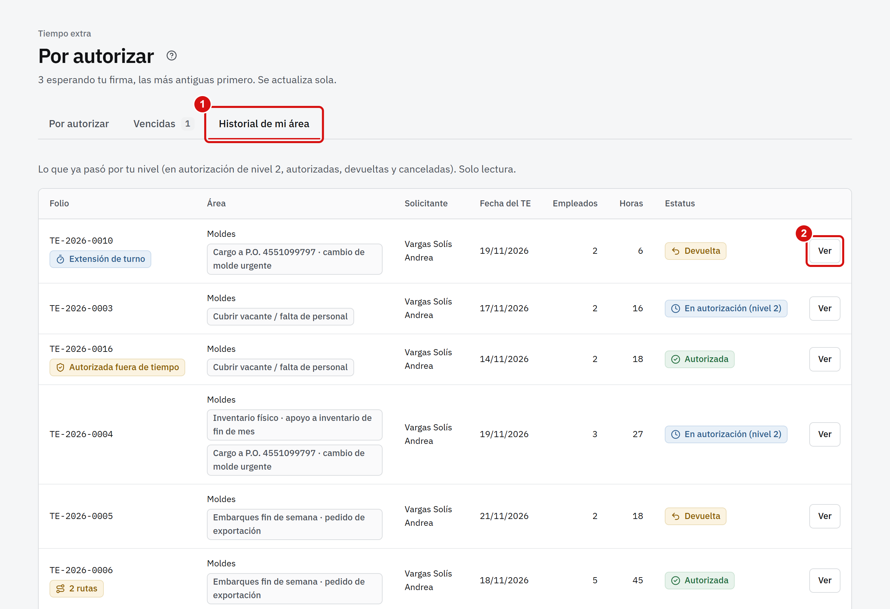
La pestaña Historial de mi área: lo que ya pasó por tu nivel (en autorización de nivel 2, autorizadas, devueltas y canceladas). Solo lectura.
Ver abre el detalle con su historial completo.
El historial sirve para saber en qué paso va algo que ya firmaste, y a quién avisarle si se atoró.
9. Mi área y el personal
Mi área (organigrama)
Muestra quién autoriza y quién captura en tu área. Sirve para comprobar que tu gente puede capturar y que tu área tiene Autorizador 1.
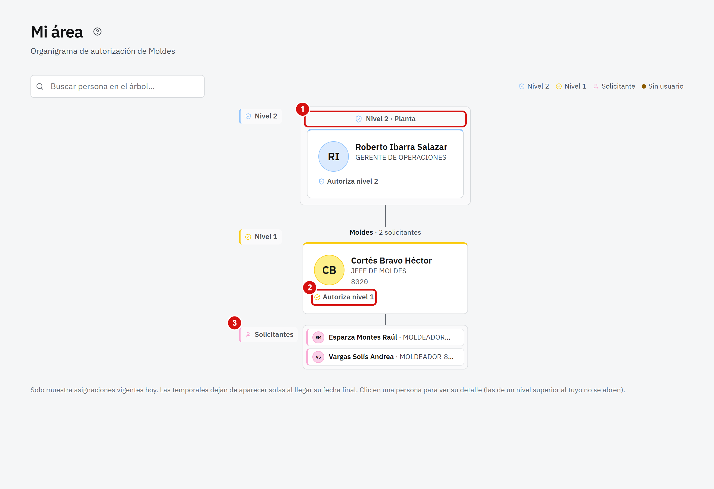
Nivel 2 · Planta: quién da la segunda firma.
Tu tarjeta con Autoriza nivel 1.
Solicitantes: quién puede capturar tiempo extra en tu área.
Solo se muestran las asignaciones vigentes hoy. Las temporales dejan de aparecer solas al llegar su fecha final. Si falta alguien en tu área, o hay que dar un permiso, pide a Recursos Humanos o a Autorización 2: tú no das roles.
Lista del personal de mi área
Es la lista de las personas a quienes puedes pedirles tiempo extra. Se entra desde Personal de mi área › Ver lista, en tu Inicio. Es solo consulta.
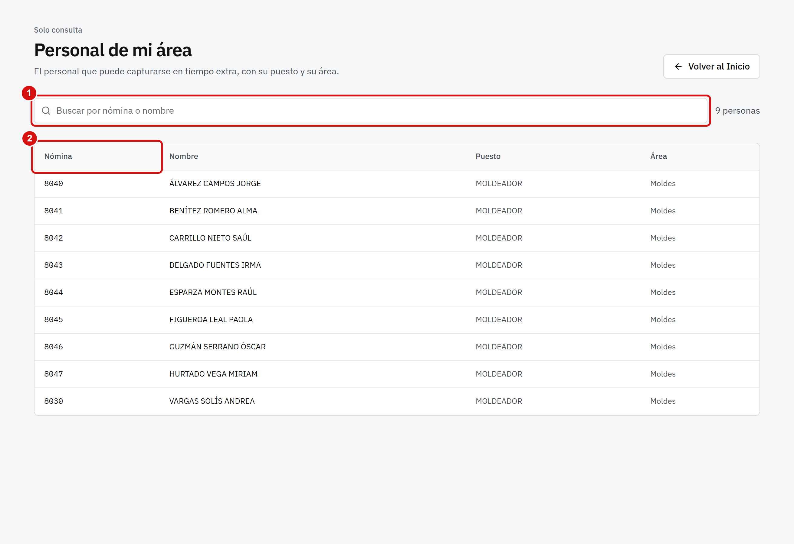
Busca por nómina o nombre.
La tabla trae nómina, nombre, puesto y área.
Si alguien no sale, es porque no está activo o no está marcado como elegible para tiempo extra en el padrón (los jefes y supervisores normalmente no lo están). Recursos Humanos lo corrige.
10. Si tú también pides tiempo extra
Tú también puedes capturar tiempo extra de tu área. Cómo se arma la solicitud es igual que en el manual del Solicitante (fecha, motivos, empleados, horarios, transporte, comentario y envío); revísalo en Ayuda y manuales. Aquí solo lo que cambia para ti.
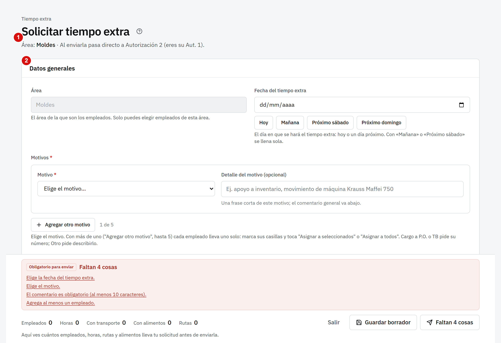
El aviso de arriba lo dice: «Al enviarla pasa directo a Autorización 2 (eres su Aut. 1)».
Solo puedes elegir empleados de tu área.
Qué cambia
Se salta tu propio nivel: tú no te firmas. Queda en En autorización (nivel 2) y la firma Autorización 2.
No aparece en tu bandeja de Por autorizar.
Si Autorización 2 la devuelve, regresa a ti; al corregirla y reenviarla va directo a Autorización 2 otra vez.
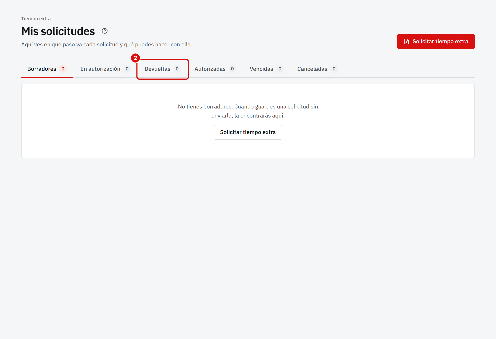
Solicitar tiempo extra.
Mis solicitudes agrupa lo tuyo por pestañas (Borradores, En autorización, Devueltas, Autorizadas, Vencidas y Canceladas). Una devuelta se corrige y se reenvía; una vencida se duplica con otra fecha.
11. Casos especiales
Autoricé por error
Una firma no se deshace. Avisa a Recursos Humanos o a Autorización 2, antes de que se confirme al proveedor: Recursos Humanos puede devolver la solicitud para corregirla o cancelarla con un motivo. Si ya se confirmó, Recursos Humanos la cancela y avisa al proveedor por su cuenta: la aplicación no avisa al proveedor.
Una solicitud de mi gente no aparece en mi bandeja
Solo ves lo de tu área y lo que ya fue enviado. Un borrador solo lo ve quien lo está armando.
Si ya la firmaste, está en el Historial de mi área.
Si pasó la fecha, está en Vencidas.
Si la capturaste tú, no la firmas: va directo a Autorización 2.
Si el solicitante es de otra área, no es tuya. Pide a Recursos Humanos que revise sus áreas asignadas.
Se venció una solicitud sin que yo la viera
Mira en Vencidas. Si el tiempo extra sí se trabajó, avisa a Autorización 2 para que la autorice fuera de tiempo. Para evitarlo, revisa la bandeja todos los días y fíjate en Vence hoy.
Voy a faltar (vacaciones o incapacidad)
Tu permiso tiene fechas. Pide a Recursos Humanos o a Autorización 2 que den el rol de Autorizador 1 a tu suplente en tu área, con las fechas de tu ausencia. Mientras tanto, nadie firma el nivel 1 de tu área y sus solicitudes no avanzan.
Dos personas respondieron lo mismo
El portal no deja firmar dos veces. Al que llega segundo le avisa «Alguien más ya respondió esta solicitud» y no se cambia nada.
No encuentro a un empleado para capturar
Solo salen los elegibles de tu área. Revisa la lista del personal de mi área. Si falta, Recursos Humanos lo marca como elegible en el padrón.
El proveedor no recibió a alguien
La aplicación no avisa al proveedor por sí sola; quien manda el Formato de rutas es Recursos Humanos. Si te reportan que alguien no fue recogido, pide a Recursos Humanos que revise que la solicitud estaba confirmada, que la persona sale en el Formato de rutas del día correcto (ojo con los horarios que cruzan la medianoche: el regreso va al día siguiente) y que tiene ruta, comunidad, punto de reunión y teléfono. Tú puedes comprobar en el Historial de mi área › Ver que la persona estaba en la solicitud y con transporte.
12. Preguntas frecuentes
¿Puedo firmar lo que yo capturé?No. Lo que capturas va directo a Autorización 2.
¿Puedo devolver una solicitud que ya autoricé?No desde tu bandeja. Pide a Recursos Humanos que la devuelva o la cancele.
¿Puedo ver o firmar lo de otra área?No. Solo lo de las áreas donde eres Autorizador 1.
¿Qué pasa si no firmo a tiempo?Queda Vencida. Ya no la firmas; solo Autorización 2 puede autorizarla fuera de tiempo.
¿Cómo sé si Autorización 2 ya firmó?En el Historial de mi área, el estatus pasa de «En autorización (nivel 2)» a «Autorizada». El portal no avisa solo.
¿Por qué tiene «2 rutas» o más?Porque hay empleados en rutas distintas. Cada ruta extra cuesta; la solicitud debe traer una justificación.
Olvidé mi contraseña.Solo se restablece en persona con Recursos Humanos, un Autorizador 2 o Sistemas y tu identificación. Nunca la des por teléfono ni por mensaje.
Se cerró mi sesión.Por seguridad se cierra a los 30 minutos sin usar. Entra de nuevo; no se pierde lo ya firmado.
13. Qué significa cada estatus
Así se ve cada estatus y qué haces tú con él:
Estatus
Qué significa
Qué haces tú
Borrador
Alguien la guardó y todavía no la envía. Solo la ve quien la armó.
Nada. No la ves hasta que se envíe.
En autorización (nivel 1)
Espera tu firma.
Está en Por autorizar: Autorizar o Devolver.
En autorización (nivel 2)
Ya la firmaste; espera la segunda firma (Autorización 2).
Nada. La ves en el Historial de mi área. Si urge, avisa a Autorización 2.
Devuelta
Alguien pidió que se corrija; regresó a quien la capturó.
Nada. Avisa a quien la capturó. Al reenviarla vuelve a tu bandeja.
Autorizada
Tiene tu firma y la de Autorización 2. Recursos Humanos la confirmará.
Nada. Si fue un error, pide a Recursos Humanos que la devuelva o la cancele antes de confirmarla.
Confirmada por RH
Recursos Humanos ya la confirmó y pidió el transporte.
Nada.
Vencida
Pasó el día del tiempo extra sin terminar de autorizarse.
Nada: ya no la puedes firmar ni devolver. Solo Autorización 2 puede autorizarla fuera de tiempo; quien la pidió puede duplicarla con otra fecha.